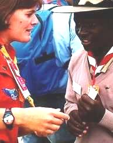
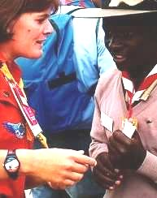

World Organization of the Scout Movement


-
Missing Words
-
Big Debate
-
Peace Journal
-
Peace Reporter
-
The Roads to Peace
- Legends of Peace
-
Manifesto 2000


 Go for the Big Debate !
|
|
 Go for the Big Debate ! |
Found at : http://www.culture.de.la.paix.itgo.com
email : webmaster@culture.de.la.paix.itgo.com
Devised by WOSM in collaboration with
UNESCO